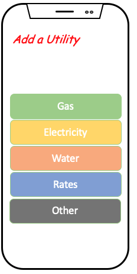

bibliography
Your bibliography
• Website AQUA ALM - TEST MANAGEMENT SOFTWARE TOOL In-text: [12] Your Bibliography: [12]"aqua ALM - Test Management Software Tool", aqua - Testmanagement Software, 2020. [Online]. Available: https://aqua-cloud.io/en?utm_source=Google&utm_medium=Ads&utm_campaign=NonBrandROW&gclid=EAIaIQobChMIpPj278vd6wIVSB0rCh0FYwbdEAAYASAAEgK-5_D_BwE. [Accessed: 11- Sep- 2020]. Copy bibliography citation Copy in-text citation Check for grammar • Website DOWNLOAD ANDROID STUDIO AND SDK TOOLS | ANDROID DEVELOPERS In-text: [9] Your Bibliography: [9]"Download Android Studio and SDK tools | Android Developers", Android Developers, 2020. [Online]. Available: https://developer.android.com/studio. [Accessed: 11- Sep- 2020]. Copy bibliography citation Copy in-text citation Check for grammar • Website FREE PERSONALITY TEST, TYPE DESCRIPTIONS, RELATIONSHIP AND CAREER ADVICE | 16PERSONALITIES In-text: [4] Your Bibliography: [4]"Free personality test, type descriptions, relationship and career advice | 16Personalities", 16personalities.com, 2020. [Online]. Available: https://www.16personalities.com/. [Accessed: 11- Sep- 2020]. Copy bibliography citation Copy in-text citation Check for grammar • Website ISO/IEC 27001 — INFORMATION SECURITY MANAGEMENT In-text: [3] Your Bibliography: [3]"ISO/IEC 27001 — Information security management", ISO, 2020. [Online]. Available: https://www.iso.org/isoiec-27001-information-security.html. [Accessed: 11- Sep- 2020]. Copy bibliography citation Copy in-text citation Check for grammar • Website IT AND BUSINESS CONSULTING SERVICES | CGI.COM In-text: [1] Your Bibliography: [1]"IT and business consulting services | CGI.com", Cgi.com, 2020. [Online]. Available: https://www.cgi.com/en. [Accessed: 11- Sep- 2020]. Copy bibliography citation Copy in-text citation Check for grammar • Website JIRA | ISSUE & PROJECT TRACKING SOFTWARE | ATLASSIAN In-text: [7] Your Bibliography: [7]"Jira | Issue & Project Tracking Software | Atlassian", Atlassian, 2020. [Online]. Available: https://www.atlassian.com/software/jira?gclsrc=aw.ds&&aceid=&adposition=&adgroup=89541903542&campaign=9124878174&creative=415542516433&device=c&keyword=jira&matchtype=e&network=g&placement=&ds_kids=p51242139359&ds_e=GOOGLE&ds_eid=700000001558501&ds_e1=GOOGLE&gclid=EAIaIQobChMIzfWIzsrd6wIVlwsrCh3CNQsmEAAYAiAAEgJGx_D_BwE. [Accessed: 11- Sep- 2020]. Copy bibliography citation Copy in-text citation Check for grammar • Website LEARNING STYLES QUIZ In-text: [5] Your Bibliography: [5]"Learning Styles Quiz", Emtrain.eu, 2020. [Online]. Available: http://www.emtrain.eu/learning-styles/. [Accessed: 11- Sep- 2020]. Copy bibliography citation Copy in-text citation Check for grammar • Website MANUAL TESTING ON MOBILE DEVICES In-text: [11] Your Bibliography: [11]"Manual Testing on Mobile Devices", Sauce Labs, 2020. [Online]. Available: https://saucelabs.com/blog/manual-testing-on-mobile-devices. [Accessed: 11- Sep- 2020]. Copy bibliography citation Copy in-text citation Check for grammar • Website NAB DEVELOPER PORTAL In-text: [13] Your Bibliography: [13]"NAB Developer Portal", Developer.nab.com.au, 2020. [Online]. Available: https://developer.nab.com.au. [Accessed: 11- Sep- 2020]. Copy bibliography citation Copy in-text citation Check for grammar • Website NATIONAL INSTITUTE OF STANDARDS AND TECHNOLOGY | NIST In-text: [2] Your Bibliography: [2]"National Institute of Standards and Technology | NIST", NIST, 2020. [Online]. Available: https://www.nist.gov. [Accessed: 11- Sep- 2020]. Copy bibliography citation Copy in-text citation Check for grammar • Website PRICE, U. Leadership Style Quiz: Identify your Style In-text: [6] Your Bibliography: [6]U. Price, "Leadership Style Quiz: Identify your Style", Eml.usc.edu, 2020. [Online]. Available: https://eml.usc.edu/blog/leadership-style-quiz. [Accessed: 11- Sep- 2020]. Copy bibliography citation Copy in-text citation Check for grammar • Website ROBERT K. GREENLEAF In-text: [14] Your Bibliography: [14]"Robert K. Greenleaf", En.wikipedia.org, 2020. [Online]. Available: https://en.wikipedia.org/wiki/Robert_K._Greenleaf. [Accessed: 11- Sep- 2020]. Copy bibliography citation Copy in-text citation Check for grammar • Website THE 10 BEST DATA SCRAPING TOOLS AND WEB SCRAPING TOOLS - SCRAPER API In-text: [8] Your Bibliography: [8]"The 10 Best Data Scraping Tools and Web Scraping Tools - Scraper Api", Scraper Api, 2020. [Online]. Available: https://www.scraperapi.com/blog/the-10-best-web-scraping-tools/. [Accessed: 11- Sep- 2020]. Copy bibliography citation Copy in-text citation Check for grammar • Website XCODE - SWIFTUI- APPLE DEVELOPER In-text: [10] Your Bibliography: [10]"Xcode - SwiftUI- Apple Developer", Developer.apple.com, 2020. [Online]. Available: https://developer.apple.com/xcode/swiftui/. [Accessed: 11- Sep- 2020]. Copy bibliography citation Copy in-text citation Check for grammar
<Landing Page

Utility Page
Provider page

It would appear from the description that the role would be involved in pitching the service offerings to prospective companies – This may be a full managed service, hybrid or setting the client up to manage internally.
They also look to provide auditing services, testing, evaluation and certification services to IT security product businesses.
It looks as though the manager needs to be proficient in cybersecurity practises, when not pitching to a prospective clients they would be running the operation to protect their existing clients to protect their data and infrastructure in the following areas:
- Identity and access management
- Detection of intrusions and response
- Threat hunting
- Forensics on the latest vulnerabilities
- Security Incident Event Monitoring (SIEM)
Match - Qualifications Skills & experience Required
| Job Requirements | My Skills & experience | Y/N |
|---|---|---|
| Qualifications | ||
| Not Detailed - I would suggest a tertiary qualification in it would be highly regarded | Nothing relevant in this space. |  |
| Rights to work in Australia | Australian Citizen |  |
| Experience | ||
| Extensive IT security experience | I have limited IT security experience | |
| Cybersecurity threat detection & SIEM technology | I’m across DDos and potential threats against the finance industry however do not have a full understanding of SIEM | |
| People Leadership | Extensive leadership experience, having led teams from 5 to 140. Including leaders of leaders. | |
| Vendor Management | Have managed supplier’s, negotiated contracts as the client. Including the governance requirements | |
| Risk Management | Extensive Risk experience across many different functional teams | |
| Skills | ||
| Stakeholder Management | My soft skills have been honed over 30 years in the private industry. While you can always learn in this space – I would be putting a lot of time into further developing in these at the expense of the technical requirements of the role | |
| Influencing | ||
| Communication (Written & Verbal) | ||
| Problem Solving | |
|
| Critical Thinking | |
|
| Continuous Improvement | |
|
| NIST | NIL | |
| ISO27001 | NIL | |
| CPS 234 & 231 | I have a working knowledge of the prudential standards | |
My Plan
- Complete this course(Bachelor of Information Technology - Undergraduate RMI-CPT-DEG-2020) – completing this course will enable me to at least change the first smiley face to green.
- Extensive IT experience – At my current organisation I would work towards moving into their Cyber security team. To enable this, I would first need to move from Commercial Risk into Technology Risk. And then into the security team. This could be achieved within 12 months – with a year of this degree completed.
- Technical skills – The plan would be to look at these frameworks as part of this course in more detail – Completing any relevant accreditations (e.g. become ISO 27001 certified through a Registered training office. I would also look to attend relevant Cybersecurity events.
- NIST
- SIEM
- ISO 27001